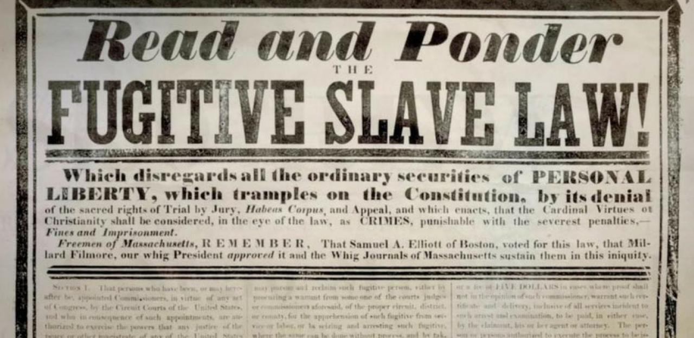

Causes of the Civil War
Samuel Styles, Nathan Wendell
-
Compromise of 1850
January 29, 1850
Fugitive slave act was amended and slave trade in the capitol was abolished. California entered the union on the free state side. Created New mexico and Utah. Texas vs. New Mexico was settled.
Sources
"Introduction - Compromise of 1850: Primary Documents in American History - Research Guides at Library of Congress." https://guides.loc.gov/compromise-1850, Accessed 1 Jan. 1970.
-
Fugitive Slave Act
September 18, 1850
The fugitive slave act states that all slaves must be returned to their owners even if they are in a free state. The Fugitive Slave Act was part of the Compromise of 1850.
Sources
"Fugitive Slave Act | American Battlefield Trust." https://www.battlefields.org, Accessed 1 Jan. 1970.
Augustyn, Adam. "Fugitive Slave Acts" Britannica, 6 Jul. 2023, Https://www.britannica.com, Accessed 1 Jan. 1970.
-
Publishing of Uncle Tom's Cabin
March 20, 1852
Sources
-
Kansas-Nebraska Act
May 30, 1854
Sources
-
Bleeding Kansas
Sources
-
Dred Scott Case
March 6, 1857
Sources
-
Lincoln-Douglas debates
Aug 21, 1858 - Oct 15, 1858
Sources
-
Raid on Harper's Ferry
October 16, 1859
Sources
-
Election of Lincoln
November 6, 1860
Sources
-
Secession of the Southern States
December 20, 1860
Sources
Note: Images and dates may not load right away, try scrolling up and down to trigger the animation, refreshing page, and waiting